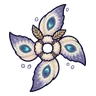

อีกายักษ์
มอนธาตุลม Lv 32–48
เจอที่
| แมพ | โซน | Lv | ภูมิภาค |
|---|---|---|---|
| ถนนผู้อพยพ | 32–38 | ดินแดนเหนือ | |
| ถนนผู้อพยพ | ขบวนเกวียนล่ม | 38–40 | ดินแดนเหนือ |
| ด่านสะพานเกลือ | 36–42 | ดินแดนเหนือ | |
| สะพานไม้ข้ามแม่น้ำ | 34–42 | ดินแดนเหนือ | |
| ท่าเรือเกลือร้าง | 38–48 | ดินแดนเหนือ | |
| หอสังเกตการณ์ริมด่าน | 36–43 | ดินแดนเหนือ |
ค่าสถานะตามเลเวล
| Lv | HP | ATK | DEF | MDEF | EXP | Job |
|---|---|---|---|---|---|---|
| 32 | 2,585 | 54–82 | 8 | 7 | 40 | 30 |
| 40 | 4,752 | 79–118 | 10 | 8 | 49 | 37 |
| 48 | 8,033 | 94–141 | 12 | 10 | 57 | 43 |
ตีด้วยธาตุไหนดี
แรงขึ้น: ดิน ×1.5 พิษ ×1.25
เบาลง: น้ำ ×0.5 ลม ×0.25
วัตถุดิบที่ดรอป
| ของ | โอกาส | |
|---|---|---|
| แหวนที่อีกาขโมยมา | 50% | 1 ชิ้น (15% ได้ 2) |
อุปกรณ์ที่ดรอป (4)
| ของ | โอกาส |
|---|---|
| 0.25% | |
| 0.25% | |
| 0.25% | |
 ดาวยักษ์ปีกผีเสื้อราตรี | 0.06% |
สกิล
ยิงกระจาย (Lv 25+) · ยิงกระจาย (Lv 60+) · หลบ (Lv 60+)